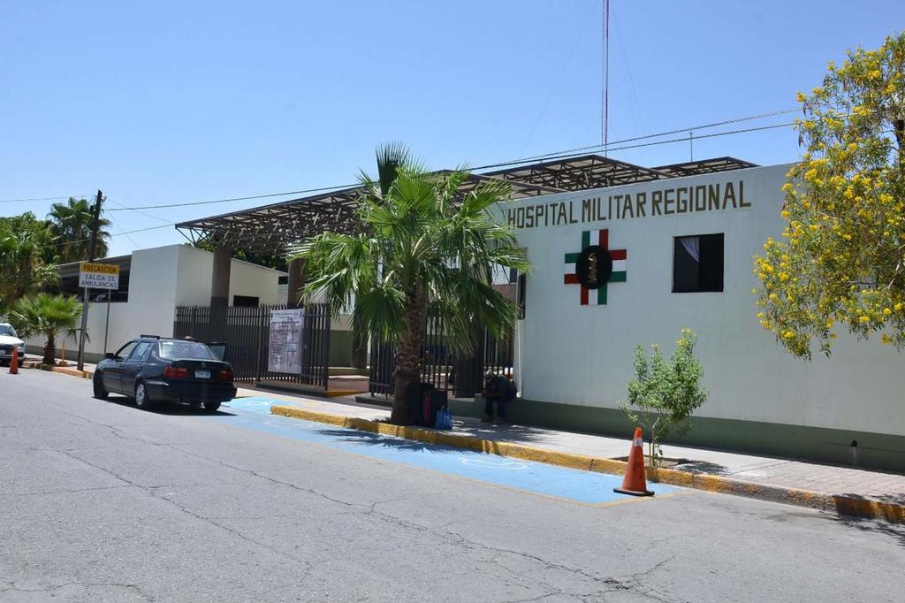

El Dr. Jesús José fungió como director del hospital militar regional,
durante su administración enfrentó las primeras ola de COVID-19, solucionó la grave
escasez de recursos médicos y de personal calificado mientras ejercía su especialidad
en cirugía de columna como el único ortopedista en la zona. En esta experiencia
el Dr. Jesús José puso a prueba de fuego su expertíz en varias áreas concluyendo su gestión
con éxito y siendo requisitado por el ejercito en otra zona por su pericia.
